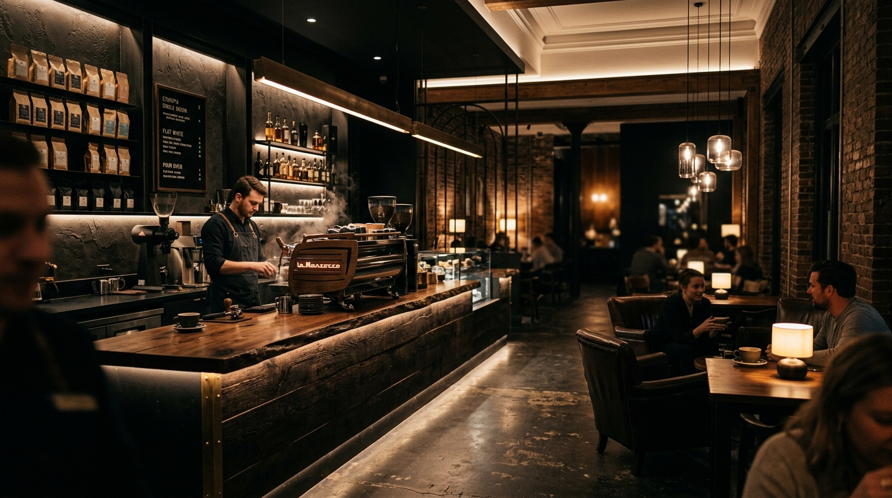

Filosofi & Sejarah
Cerita Terracotta Bandung
Terracotta lahir di kawasan legendaris Braga Bandung. Berangkat dari rasa cinta mendalam terhadap tanah vulkanis Jawa Barat dan kekayaan kopi Nusantara, kami menciptakan ruang sangrai terbuka yang mengedepankan transparansi proses.
Setiap batch kecil 6 kilogram kami pantau dengan thermal curve digital untuk mengeluarkan rasa manis alami buah dan aroma rempah bunga yang kaya.
Mahmod Baghdado
Founder & Head Roaster


Pengrajin Kopi Kami
Tim Master Roaster Bandung
Q-Grader tersertifikasi, barista berpengalaman, dan chef pastry Prancis di balik Terracotta.


Buku Tamu
Ulasan Penikmat Kopi
★★★★★
“Terracotta adalah oase kopi di Braga Bandung. Rasa kopinya sangat bersih, pelayanan ramah, dan pastrinya renyah sempurna.”
Rian Hidayat
Pengulas Kuliner Bandung